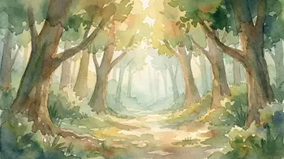

Nature Seed Σχεδιάστε μια διαδρομή. Φέρτε τα μαζί.
Ένα δωρεάν παζλ φυσικής όπου λύνετε σχεδιάζοντας, που παίζεται στο πρόγραμμα περιήγησής σας. Σχεδιάστε μια γραμμή με περιορισμένο μελάνι και γίνεται ράμπα, γέφυρα ή σημείο σύλληψης που μεταφέρει το Water Drop στο Seed. Κάθε λυμένο επίπεδο αποκαθιστά μια σκηνή δάσους σε ακουαρέλα.
Κυκλοφόρησε στις 18 Σεπτεμβρίου 2026 με 100 επίπεδα, αστέρια αποδοτικότητας γραμμής και αποθηκευμένη πρόοδο. Είναι δωρεάν στα itch.io, Game Jolt και indiexpo. Η έκδοση για iOS και Android είναι ο στόχος και δεν βρίσκεται ακόμη στα καταστήματα εφαρμογών.
Σχεδίασησχεδιάστε με περιορισμένο μελάνι
Σύνδεσηφέρτε το Water Drop στο Seed
Άνθισηφέρτε πίσω το δάσος
Μέσα στο τρέχον build
Ό,τι σχεδιάζετε γίνεται μέρος του επιπέδου.
Κάθε πινελιά που επιβεβαιώνετε γίνεται στερεό αντικείμενο με πραγματικές συγκρούσεις και το Water Drop και το Seed αντιδρούν σε αυτό. Το μελάνι και ο αριθμός των γραμμών είναι περιορισμένα, επομένως το σχήμα της γραμμής μετράει.
Κατάσταση κυκλοφορίας Κυκλοφόρησε στις 18 Σεπτεμβρίου 2026

Επισκόπηση παιχνιδιού
Ένα χαλαρωτικό παζλ όπου λύνετε σχεδιάζοντας, για το πώς θα φέρετε κοντά δύο μικρούς χαρακτήρες.
Η ιδέα
Σχεδιάστε μια διαδρομή, φέρτε κοντά το Water Drop και το Seed και δείτε το ήσυχο σκίτσο να ζωντανεύει.
Εκκίνηση build
100 παιζόμενα επίπεδα με σχεδίαση αφής, αστέρια για την αποδοτικότητα γραμμής και πρόοδο που αποθηκεύεται ανάμεσα στις συνεδρίες.
Κοινό
Για παίκτες που αγαπούν τα ήρεμα παζλ, την ελαφριά φυσική, τα φυσικά θέματα και τις χαλαρές συνεδρίες στο κινητό.
Κατάσταση
Κυκλοφόρησε στις 18 Σεπτεμβρίου 2026 και παίζεται δωρεάν στο πρόγραμμα περιήγησής σας. Στόχος είναι μια έκδοση για κινητά, που δεν βρίσκεται ακόμη στα καταστήματα εφαρμογών.
Χαρακτηριστικά
Τι κάνετε στο Nature Seed.
Φυσικές διαδρομές που λύνονται με σχέδιο
Κάθε παζλ ξεκινά με έδαφος, το Seed και το Water Drop. Η πινελιά του παίκτη γίνεται η ράμπα, η γέφυρα ή το σημείο σύλληψης που τα ενώνει.
Σαφής ανατροφοδότηση φυσικής
Το Water Drop και το Seed κινούνται με τρόπους που μπορείτε να παρακολουθήσετε, έτσι μια αποτυχημένη προσπάθεια σας δείχνει τι να αλλάξετε.
Ανταμοιβές αποκατάστασης δασών
Ολοκληρώστε ένα επίπεδο και η σκιτσαρισμένη σκηνή γεμίζει χρώμα και δέντρα που μεγαλώνουν.
Σύντομα επίπεδα, σχεδίαση με αφή
Τα επίπεδα είναι σύντομα και σχεδιάζετε με αφή, κάτι που ταιριάζει σε γρήγορες συνεδρίες στο κινητό.
Κύκλος παιχνιδιού
Πώς παίζεται το Nature Seed
- Βήμα 01Διαβάστε το σκίτσο
Ψάξτε για πλαγιές, κενά και εμπόδια, και για τον ασφαλέστερο τρόπο να συνδέσετε και τους δύο χαρακτήρες.
- Βήμα 02Σχεδιάστε τη γραμμή
Σχεδιάστε τη γραμμή σας. Η πινελιά γίνεται ράμπα, οδηγός ή σημείο σύλληψης για τους χαρακτήρες.
- Βήμα 03Επιβεβαιώστε και παρατηρήστε
Επιβεβαιώστε τη γραμμή και δείτε τους χαρακτήρες να αντιδρούν. Βλέπετε τι δούλεψε και τι όχι.
- Βήμα 04Ανθίστε ή βελτιώστε
Αν το Water Drop φτάσει στο Seed, το δάσος επιστρέφει. Αν αστοχήσουν, ξανασχεδιάστε με όσα μόλις μάθατε.
Ιστορία / κόσμος
Ένα σκιτσαρισμένο δάσος περιμένει νερό.
Το Nature Seed ξεκίνησε ως παζλ φυσικής με σχεδίαση, για την αποκατάσταση κάτι εύθραυστου και όχι για την ώθηση αντικειμένων μεταξύ τους.
Το καστ είναι το Seed, το Water Drop και ένα δάσος που επιστρέφει από το σκίτσο στο χρώμα καθώς παίζετε. Κάθε παζλ είναι μια μικρή δουλειά: μελετήστε το έδαφος, σχεδιάστε μια διαδρομή και βοηθήστε το νερό να φτάσει σε κάτι που μπορεί να μεγαλώσει.
- Κατεύθυνση σχεδιασμού
- Ήρεμη φυσική και ορατή αποκατάσταση
- Χαρακτήρες
- Water Drop και Seed
- Αλληλεπίδραση
- Σχεδίαση με αφή
- Επιβράβευση δεξιοτεχνίας
- Μια επίλυση μιας γραμμής κερδίζει τρία αστέρια
Με μια ματιά
Δωρεάν στο πρόγραμμα περιήγησης σήμερα, με στόχο το κινητό.
Έχετε περιορισμένο μελάνι και περιορισμένο αριθμό γραμμών. Χρησιμοποιήστε τα για να μεταφέρετε το Water Drop στο Seed, μετά ξαναπαίξτε το επίπεδο και μειώστε τη λύση σας σε μία γραμμή για τρία αστέρια.
- Είδος
- Παζλ φυσικής όπου λύνετε σχεδιάζοντας
- Στόχος πλατφόρμας
- iOS / Android
- Σχήμα συνεδρίας
- Σύντομα ήρεμα επίπεδα
Λήψη στοιχείων
Υλικό τύπου και δημιουργών για το Nature Seed
Προεπισκοπήσεις WebP για κάλυψη από τον Τύπο, αξιολόγηση από εκδότες και αναφορές σελίδων καταστήματος. Τα αρχεία πηγής πλήρους ανάλυσης διατίθενται κατόπιν αιτήματος.
Μάρκα και χαρακτήρες
 Water DropΟ μπλε χαρακτήρας που πρέπει να φτάσει στο Seed.
Water DropΟ μπλε χαρακτήρας που πρέπει να φτάσει στο Seed.
 Χαρακτήρας SeedΟ πράσινος χαρακτήρας που προσπαθεί να φτάσει το Water Drop.
Χαρακτήρας SeedΟ πράσινος χαρακτήρας που προσπαθεί να φτάσει το Water Drop.
 Ανάπτυξη δέντρωνΤο δέντρο που μεγαλώνει μετά τη λύση.
Ανάπτυξη δέντρωνΤο δέντρο που μεγαλώνει μετά τη λύση.
 Μενού δάσουςΦόντο του κεντρικού μενού.
Μενού δάσουςΦόντο του κεντρικού μενού.
 Φόντο παιχνιδιούΦόντο επιπέδου με άδεια περιοχή παιχνιδιού.
Φόντο παιχνιδιούΦόντο επιπέδου με άδεια περιοχή παιχνιδιού.
Επίπεδα σκίτσου που λύνονται σχεδιάζοντας
 Επίπεδο σκίτσου 01Σκίτσο πριν από τη λύση.
Επίπεδο σκίτσου 01Σκίτσο πριν από τη λύση.
 Επίπεδο σκίτσου 02Σκίτσο πριν από τη λύση.
Επίπεδο σκίτσου 02Σκίτσο πριν από τη λύση.
 Επίπεδο σκίτσου 03Σκίτσο πριν από τη λύση.
Επίπεδο σκίτσου 03Σκίτσο πριν από τη λύση.
 Επίπεδο σκίτσου 04Σκίτσο πριν από τη λύση.
Επίπεδο σκίτσου 04Σκίτσο πριν από τη λύση.
 Επίπεδο σκίτσου 05Σκίτσο πριν από τη λύση.
Επίπεδο σκίτσου 05Σκίτσο πριν από τη λύση.
 Επίπεδο σκίτσου 06Σκίτσο πριν από τη λύση.
Επίπεδο σκίτσου 06Σκίτσο πριν από τη λύση.
 Επίπεδο σκίτσου 07Σκίτσο πριν από τη λύση.
Επίπεδο σκίτσου 07Σκίτσο πριν από τη λύση.
 Επίπεδο σκίτσου 08Σκίτσο πριν από τη λύση.
Επίπεδο σκίτσου 08Σκίτσο πριν από τη λύση.
 Επίπεδο σκίτσου 09Σκίτσο πριν από τη λύση.
Επίπεδο σκίτσου 09Σκίτσο πριν από τη λύση.
 Επίπεδο σκίτσου 10Σκίτσο πριν από τη λύση.
Επίπεδο σκίτσου 10Σκίτσο πριν από τη λύση.
Αποκατεστημένες σκηνές παζλ
Αποκαταστάθηκε το επίπεδο 01Αποκατεστημένο μετά τη λύση.
 Αποκαταστάθηκε το επίπεδο 02Αποκατεστημένο μετά τη λύση.
Αποκαταστάθηκε το επίπεδο 02Αποκατεστημένο μετά τη λύση.
 Αποκαταστάθηκε το επίπεδο 03Αποκατεστημένο μετά τη λύση.
Αποκαταστάθηκε το επίπεδο 03Αποκατεστημένο μετά τη λύση.
 Αποκαταστάθηκε το επίπεδο 04Αποκατεστημένο μετά τη λύση.
Αποκαταστάθηκε το επίπεδο 04Αποκατεστημένο μετά τη λύση.
 Αποκαταστάθηκε το επίπεδο 05Αποκατεστημένο μετά τη λύση.
Αποκαταστάθηκε το επίπεδο 05Αποκατεστημένο μετά τη λύση.
 Αποκαταστάθηκε το επίπεδο 06Αποκατεστημένο μετά τη λύση.
Αποκαταστάθηκε το επίπεδο 06Αποκατεστημένο μετά τη λύση.
 Αποκαταστάθηκε το επίπεδο 07Αποκατεστημένο μετά τη λύση.
Αποκαταστάθηκε το επίπεδο 07Αποκατεστημένο μετά τη λύση.
 Αποκαταστάθηκε το επίπεδο 08Αποκατεστημένο μετά τη λύση.
Αποκαταστάθηκε το επίπεδο 08Αποκατεστημένο μετά τη λύση.
 Αποκαταστάθηκε το επίπεδο 09Αποκατεστημένο μετά τη λύση.
Αποκαταστάθηκε το επίπεδο 09Αποκατεστημένο μετά τη λύση.
 Αποκαταστάθηκε το επίπεδο 10Αποκατεστημένο μετά τη λύση.
Αποκαταστάθηκε το επίπεδο 10Αποκατεστημένο μετά τη λύση.

 Αποκαταστάθηκε το επίπεδο 02Αποκατεστημένο μετά τη λύση.
Αποκαταστάθηκε το επίπεδο 02Αποκατεστημένο μετά τη λύση.
 Αποκαταστάθηκε το επίπεδο 03Αποκατεστημένο μετά τη λύση.
Αποκαταστάθηκε το επίπεδο 03Αποκατεστημένο μετά τη λύση.
 Αποκαταστάθηκε το επίπεδο 04Αποκατεστημένο μετά τη λύση.
Αποκαταστάθηκε το επίπεδο 04Αποκατεστημένο μετά τη λύση.
 Αποκαταστάθηκε το επίπεδο 05Αποκατεστημένο μετά τη λύση.
Αποκαταστάθηκε το επίπεδο 05Αποκατεστημένο μετά τη λύση.
 Αποκαταστάθηκε το επίπεδο 06Αποκατεστημένο μετά τη λύση.
Αποκαταστάθηκε το επίπεδο 06Αποκατεστημένο μετά τη λύση.
 Αποκαταστάθηκε το επίπεδο 07Αποκατεστημένο μετά τη λύση.
Αποκαταστάθηκε το επίπεδο 07Αποκατεστημένο μετά τη λύση.
 Αποκαταστάθηκε το επίπεδο 08Αποκατεστημένο μετά τη λύση.
Αποκαταστάθηκε το επίπεδο 08Αποκατεστημένο μετά τη λύση.
 Αποκαταστάθηκε το επίπεδο 09Αποκατεστημένο μετά τη λύση.
Αποκαταστάθηκε το επίπεδο 09Αποκατεστημένο μετά τη λύση.
 Αποκαταστάθηκε το επίπεδο 10Αποκατεστημένο μετά τη λύση.
Αποκαταστάθηκε το επίπεδο 10Αποκατεστημένο μετά τη λύση.
Χρονολόγιο ανάπτυξης
Χρονολόγιο ανάπτυξης του Nature Seed
- Καλοκαίρι 2025Πρωτότυπη ιδέα
Το Nature Seed ξεκίνησε ως ιδέα για ένα ήρεμο παζλ για κινητά σχετικά με τη σύνδεση και την αποκατάσταση της φύσης.
- Οκτώβριος 2025Ταυτότητα Seed και Water Drop
Ολοκληρώσαμε το έγγραφο σχεδιασμού και καταλήξαμε στο Seed και το Water Drop ως κύριους χαρακτήρες.
- Δεκέμβριος 2025Ξεκινά η ανάπτυξη
Σχεδιάσαμε τα πρώτα επίπεδα σε χαρτί, μετά αρχίσαμε να χτίζουμε και τα βασικά συστήματα έγιναν παιχνιδιστικά.
- Φεβρουάριος 2026Μεγάλη επεξεργασία πρόχειρων επιπέδων
Μια μεγάλη πρώτη, ακατέργαστη επεξεργασία των επιπέδων μάς έδωσε βάση για το μετέπειτα γυάλισμα και την εξισορρόπηση.
- Μάρτιος-Απρίλιος 2026Μηχανική και αναθεώρηση επιπέδου
Εξετάσαμε επιπλέον μηχανισμούς και προσχέδια επιπέδων και τα απλοποιήσαμε ή τα ξαναδουλέψαμε για να μείνει το παιχνίδι ήρεμο.
- Ιούλιος 2026Γύρος κάθετου πρωτοτύπου
Το build του Ιουλίου έφερε σχεδίαση με περιορισμένο μελάνι, αστέρια αποδοτικότητας, αποθηκευμένη πρόοδο και σταθερή δημιουργία γραμμών σε έναν παιχνιδιστικό κύκλο.
- 18 Σεπτεμβρίου 2026Κυκλοφορία Nature Seed
Το παιχνίδι κυκλοφόρησε ως Nature Seed με 100 επίπεδα, αστέρια αποδοτικότητας γραμμής, αποθηκευμένη πρόοδο και σκηνές αποκατάστασης με ακουαρέλα.
Συχνές ερωτήσεις για το Nature Seed
Συχνές ερωτήσεις για το Nature Seed
Είναι δωρεάν το Nature Seed;
Ναι. Μπορείτε να το παίξετε δωρεάν στο πρόγραμμα περιήγησής σας στα itch.io, Game Jolt και indiexpo.
Έχει κυκλοφορήσει ήδη το Nature Seed;
Ναι. Κυκλοφόρησε στις 18 Σεπτεμβρίου 2026 με 100 επίπεδα. Η έκδοση για iOS και Android είναι η πλατφόρμα-στόχος και δεν βρίσκεται ακόμη στα καταστήματα εφαρμογών.
Τι είδους παιχνίδι είναι το Nature Seed;
Ένα χαλαρωτικό παζλ φυσικής όπου λύνετε σχεδιάζοντας. Οι γραμμές που σχεδιάζετε γίνονται στερεά αντικείμενα που βοηθούν το Water Drop και το Seed να συναντηθούν.
Πώς παίζεται το Nature Seed;
Διαβάστε το έδαφος, σχεδιάστε μια διαδρομή με το περιορισμένο μελάνι σας και δείτε και τους δύο χαρακτήρες να αντιδρούν. Αν αστοχήσουν, ξανασχεδιάστε. Λιγότερες γραμμές δίνουν περισσότερα αστέρια, και μία γραμμή δίνει τρία.
Ποιος φτιάχνει το Nature Seed;
Το WillowinWorlds, ένα ανεξάρτητο στούντιο που φτιάχνει παζλ και arcade παιχνίδια για κινητά.
Μπορώ να χρησιμοποιήσω το υλικό τύπου του Nature Seed;
Ναι, για τον Τύπο, την αξιολόγηση από εκδότες και αναφορές καταστήματος. Τα αρχεία πηγής παραμένουν ιδιωτικά, εκτός αν μας τα ζητήσετε.
Nature Seed Devlog
Τι άλλαξε και πότε
- Κυκλοφορία Nature Seed
Το Nature Seed κυκλοφόρησε με τον τελικό τίτλο του ως δωρεάν παιχνίδι για browser στα itch.io, Game Jolt και indiexpo, με 100 επίπεδα, αστέρια αποδοτικότητας γραμμής και αποθηκευμένη πρόοδο.
- Επεξεργασία αποκατάστασης και σταθερότητας του επιπέδου 2
Το Επίπεδο 2 χρησιμοποιεί πλέον το ζεύγος φόντου παραγωγής του, με πιο αξιόπιστη ρύθμιση επιπέδου, ελέγχους σύγκρουσης και ανατροφοδότηση ολοκλήρωσης.
- Ιούλιος 2026Παιζόμενο build
Το build του Ιουλίου συνδύασε σχεδίαση γραμμών με περιορισμένο μελάνι, αστέρια αποδοτικότητας, αποθηκευμένη πρόοδο και ανατροφοδότηση αποκατάστασης.
- Απρίλιος 2026Επανεπεξεργασία επιπέδων
Μετά από εσωτερική αξιολόγηση ξαναδουλέψαμε αρκετά προσχέδια επιπέδων, για να μειώσουμε την πολυπλοκότητα και να διαβάζονται πιο εύκολα στο κινητό.
- Μάρτιος 2026Ανασκόπηση μηχανικής
Δοκιμάσαμε επιπλέον μηχανισμούς και αφαιρέσαμε όσους έκαναν τα επίπεδα να φαίνονται γεμάτα.
- Φεβρουάριος 2026Μεγάλη επεξεργασία πρόχειρων επιπέδων
Μια μεγάλη πρώτη, ακατέργαστη επεξεργασία των επιπέδων έγινε η βάση για το μετέπειτα γυάλισμα και την εξισορρόπηση.
- Δεκέμβριος 2025Ξεκινά η ανάπτυξη
Τα βασικά συστήματα πέρασαν από το έγγραφο σχεδιασμού σε παιχνιδιστική μορφή.
- Καλοκαίρι 2025Πρωτότυπη ιδέα
Η πρώτη έκδοση του Nature Seed ήταν μια ιδέα για ένα ήρεμο παζλ σχετικά με τη σύνδεση και την αποκατάσταση της φύσης.